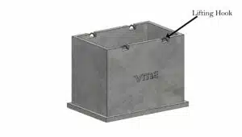
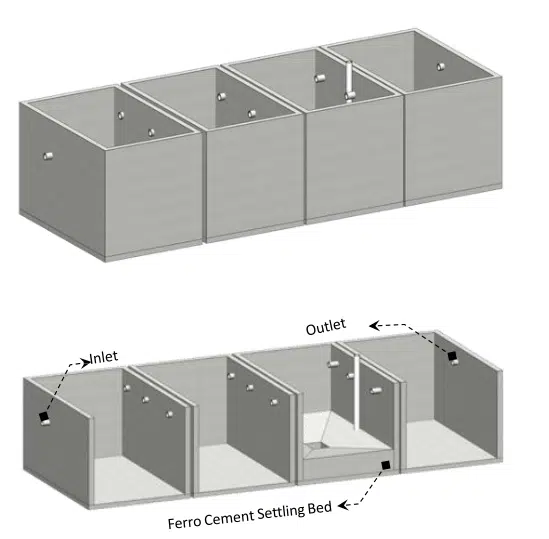

Frequently Asked Question
This will depend on whether you are using the lid as a slab or how deep tank is being buried give us a call and we can assist with your requirements.
Beneath lawns, gardens, driveways, under garages, sheds, etc.
We are giving a recess in the cover slab and in case if the tank is going to be buried into the soil, we can provide swellable bars, as shown in the figure for a tight water joint.
Yes. Tanks can be reinstalled after several years of installation. We have given hooks on the tank walls and the same can be used for shifting. Likewise in the cover slabs, the hooks are recessed and it will not project out, as shown in the.
Standard ropes, D shackles available with the crane vendors can be used
(it is important to show the weight of the tanks and the crane capacities that are to be used for lifting each of the tanks and the D shackle capacities will also change)
Yes. Waterproofing will be done in the factory. Waterproofing Material GRADE: VBR 4503FG – FOOD GRADE ISOPHTHALIC RESIN.
REFER THIS DOCUMENT
After placing the tank at site, then do core cutting at tank wall bottom for connection of 2 tank depending on your requirement. After core cutting insert the pipe then pack the gap all around the connection with Epoxy glue.
REFER THIS DOCUMENT
We supply tanks without any holes for pipe connections since they cannot be standardised and varies based on the clients’ requirements. Core cutting to be done on the wall as per the requirement, and gaps are to be filled by Epoxy Glue after fixing the pipes.
Gaps are to be filled by Epoxy Glue.
Show a drawing and the materials that will be filled between the two, connection of sleeves etc.
Test for Water Leakage is conducted in the factory itself by filling the water to the full capacity of the tank and keeping it for 24 to find the leakages if any.
Differentiation of Heavy and Medium Duty Tanks to be done based on the thickness of the Base Slab of the Tanks as tabulated below. However all the custom Tanks are Heavy Duty only.
| Sl.No | Duty type of Tank | Base slab Thickness (mm) |
|---|---|---|
| 1 | HEAVY | 150 |
| 2 | MEDIUM | 125 |
In Medium Duty tank the entire structure including cover slab have the capacity to bear the load of LMV (Light Motor Vehicle) and the Heavy Duty tank the entire structure including cover slab has the capacity to bear the Heavy Vehicles loads as well as Live Load Surcharge as per IRC Standards.
Yes. Direct vehicle movements are allowed depending upon the Type of tanks wise Medium Duty and Heavy Duty.
The Precast Tank may need to be periodically cleaned as an any other tank and this will depend on many local factors. Please consult a professional tank cleaner if your tank requires cleaning. What we do know is water tastes far better if stored underground (i,e) out of reach to the heat and light in a concrete enclosure.
You may need a permit for installing or using the tank from your local municipal authorities. There may require a minimum set back distance from buildings and boundary fences / walls. Your local water supply authority can also advise if you need any additional backflow prevention system and water meters to be installed to water mains, supplying water to the Tanks.
Precast Tanks are factory made using Higher Grade of Concrete and Steel with strict quality control measures.
Much number of tanks are cast simultaneously at factory and thus saving the overall time of the project. It ensures speedy execution.
Leak proof test is being done at factory itself and need not to do it again at site.
Minimum man power is required at site for the erection.
Since casting is done at factory, there is no need for collection of raw materials, dumping, mixing, using machineries for concreting etc. are at site.
Since minimal activities are to be carried out at site, that too for a shorter duration, it is environmentally friendly and no noise and other kind of pollutions take place at site.
Precast tanks ensure site excavation is never kept open for long period of time, therefore reducing inconveniences and minimizing the risk of accidents to both site workers and the public.
Precast tanks can be installed as fully buried (even having earth or pavements over the top slab) or partially buried or on ground or above ground level as per the requirement of clients.
Precast tanks are relocatable – they can be re-installed in some other location without causing any damage to the structure.
Precast tanks are cost effective comparing to the quality, speed of execution, minimum activities at site, immediate usage and relocatable which are not possible in cast -in-situ construction.